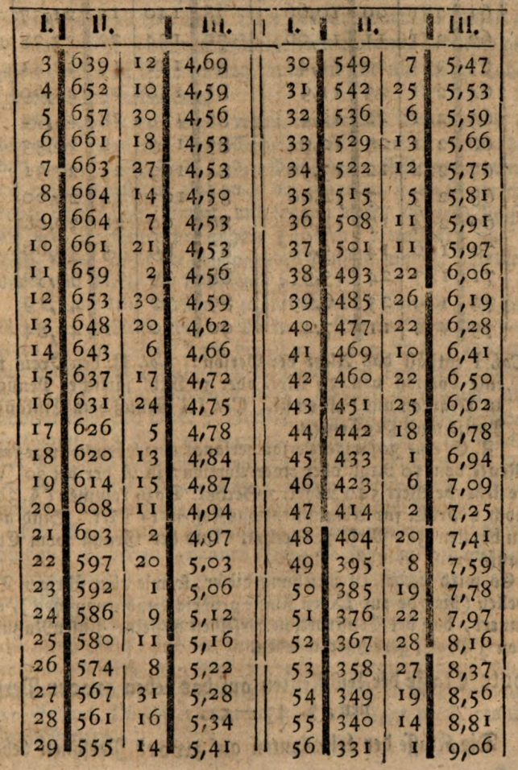
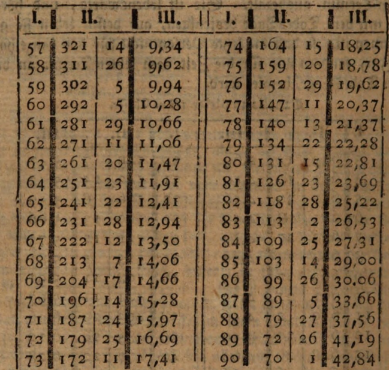
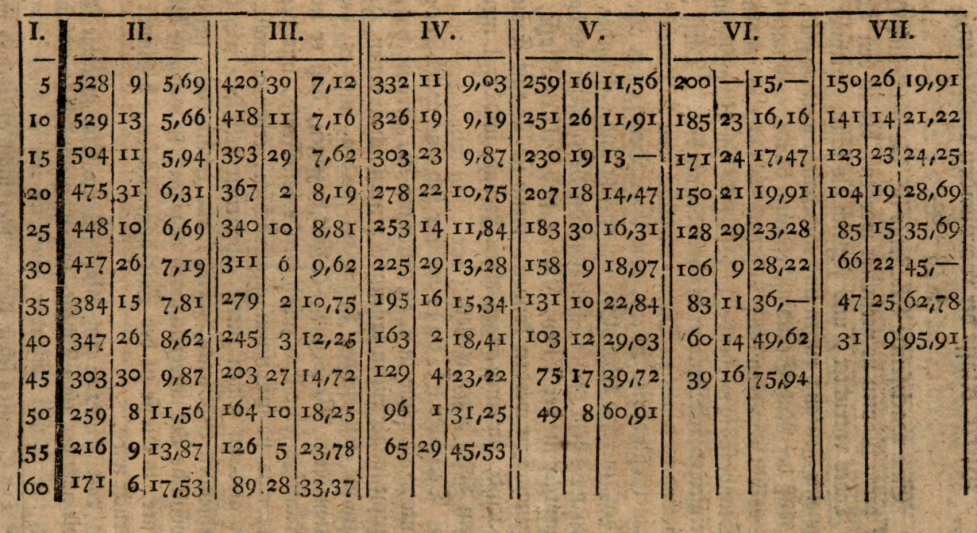
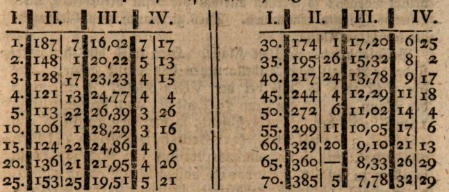
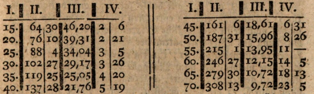
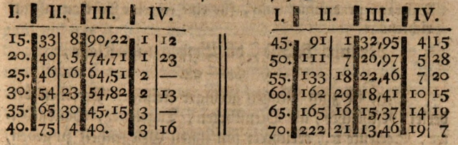

Excerpt from the "Ordinance of the General Relief Institution established in Hamburg. Second Edition, with enlarged and improved Tables. Hamburg, 1779, 30 pages and 30 sheets of tables."
Because the servant does not keep his small poverty lying in his drawer, he avoids a thousand temptations to squander the money: for before he withdraws it from the relief institution, he thinks it over; and he is further encouraged by the thought that his shilling, though it remains as it is in his handkerchief or drawer, nonetheless increases—if only a little—at the institution, and meanwhile lies in its safekeeping.
Likewise, the class of deferred life annuities, especially on a contribution basis, is very useful for all manner of scholars and artists who, without official post, manage to live modestly by their industry for as long as years and strength sustain their diligence; but who, with advancing age and declining vigor, even if they need not fear destitution, rightly wish to live with less arduous labor.
The following excerpt the readers owe, together with myself, to the esteemed Mr. Stiftsamtmann Oeder.
First Class, namely the life annuities which become due immediately. § 42–46 of the Ordinance.
§. 42. In this class, anyone may invest a fixed capital sum, either on their own life or that of another person; in return, they receive a life annuity proportionate to the age of the person, secured to them by a life annuity certificate issued by the current directors in the name of the entire Relief Institution.§. 43. This life annuity begins to accrue on the day the contract is concluded, and is first paid out at the next following payment term. It is for life, and ceases on the day of death of the person upon whose life it is taken; thus, the final payment is not for a full half-year, but only for the time from the last term until the day of death.Table for this first class.


Col. I indicates the age of the person; Col. II the price for one portion of 30 marks or 10 thalers of annual pension, given in marks and half florins; Col. III the return on the purchase price in percent.
For example, a 30-year-old person desires a life annuity of 10 thalers or one portion: the value for age 30 is 549 marks and 7 sechlings. To this must be added (§.30) an additional 2% for administrative costs, i.e., 11 marks. Thus, the total amount to be paid is 566 marks and 7 sechlings. The return on the purchase price is 5 7/100 percent.
It is here noted, regarding this and all other tables (except the seventh, which pertains to the ninth class), that their construction is based on a calculated interest return of 3 percent
Second class of life annuities based on the lives of two persons, §. 47–51.
The class of life annuities based on the lives of two persons is intended for those who, in conjunction with a second person, wish to obtain a life annuity which they shall enjoy jointly for as long as both are alive; but which, upon the death of one, passes entirely to the survivor, so that this person shall enjoy the full annuity alone until the day of their death.The life annuity (§. 49) begins to accrue immediately on the day the contract is concluded and is first paid out at the next following payment term. It is for life and ceases on the date of death of the survivor.
For this class, the preceding First Table is combined with the following Fifth Table in such a manner that from Table I one takes the value of the annuity for one of the two persons—namely the younger, if they are of different ages—and considers this (younger) person as the provider for the other (older); from Table V the value of the dependent annuity is taken, and this value is added to that of the life annuity.
For example, let one person be 30 years old and the other 45; the life annuity is 10 thalers or 1 portion. The annuity for the 30-year-old person costs, according to Table I: 549 marks and 7 sechlings; the pension for the 45-year-old person, following the death of the 30-year-old provider, costs according to Table V: 69 marks and 23 sechlings. Adding 549 marks 7 sechlings and 69 marks 23 sechlings gives 618 marks 30 sechlings. To this is added 12 marks 12 sechlings in administrative costs (§. 30), resulting in a total of 631 marks 10 sechlings for each individual. These two persons thus receive approximately 4.85% return on the purchase price.
NB. Should three persons likewise wish to enter into such a connection, further information may be obtained at the administrative office. For example, if the three persons are 49, 30, and 10 years of age, the life annuity of 1 portion or 10 thalers annually—payable immediately and continuing until the death of the longest-living—costs 755 marks and 7 sechlings. To this is added 2% administrative costs, i.e., 15 marks 3 sechlings, making a total of 770 marks 10 sechlings. These persons thus receive 3.97% of the purchase price.
Third class of deferred life annuities, §. 52–57.
By deferred life annuities is meant such an annuity which, although enjoyed by the person who has secured it until the end of their life, does not—like the life annuity of the 1st class—begin to run from the day of the concluded contract, but only begins to be paid and drawn after the lapse of the time period set in the contract. The advantage (§. 53) which the subscriber gains from the waiting period (that is, the time during which he enjoys no interest on his invested capital) lies in that he thereafter receives a higher interest than he would in the 1st class, where payment of the life annuity begins immediately.Table for this 3rd Class.
Column I contains the age. Columns II to VII contain the price of the life annuity: namely, Column II if the payment is to begin after 5 years; Column III if it is to begin after 10 years, and so forth; with the corresponding percentages.
For example, a 30-year-old person desires a life annuity of 10 thalers or 1 portion annually, but which is to be deferred for 20 years, that is, until after their 50th year of age. For age 30 with payment deferred for 20 years, the table shows 158 marks and 9 sechlings. To this is added 2% for administrative costs, that is, 3 marks and 5 sechlings; the total amount to be paid is thus 161 marks and 14 sechlings. The yield amounts to 18.97% of the purchase price.
If the person is 27 years of age, one takes the appropriate mean between 183 marks 30 sechlings at age 25 after 20 years, and 158 marks 9 sechlings at age 30 after 20 years; namely by dividing the difference of 25 marks 21 sechlings into 5 parts, and subtracting 2 such parts from 183 marks 30 sechlings. The remainder, 173 marks 22 sechlings, is then the value of the life annuity for a 27-year-old person.
If the person is 33 years of age, one takes the appropriate mean between 158 marks 9 sechlings and 131 marks 10 sechlings at age 35 after 20 years.
Table for this third class.

Fourth class of the increasing life annuities, §. 58–62.
An increasing life annuity is one which, although paid to the person in whose name it is insured until the day of their death and counted as immediately due, shall for a time remain in abeyance and be withheld. However, this period of suspension remains undefined and may be ended at will; and the annual dues accruing during such time of suspension are applied toward the enlargement of the eventual life annuities.This class is particularly intended for those who — due to fragile health, advanced age, or the nature of their profession or occupation — are exposed to greater danger to life than people would ordinarily be in the natural course of things, and who therefore cannot be admitted as providers in the sixth, seventh, or eighth class, but nonetheless wish to provide for a wife, child, a relative, or similar, after their death.
The person (§. 60) who has purchased an increasing life annuity, as defined in §. 58, and no longer wishes to let it remain dormant, must appear within the terms of admission established in §. 5 and notify the Direction of this provisionary institution that he now intends henceforth to draw his entitled life annuity, together with whatever it has accrued to in the meantime.
He then returns the life annuity certificate initially received for the increasing annuity and receives in exchange a new one, duly signed in the customary manner, in which the life annuity, as it has grown to at that point, is explicitly stated.
Table III* for the 4th Class. Example: A 30-year-old person who, according to the first table, has paid a total of 560 Marks and 7 Sechsels for a life annuity of 1 portion or 10 Rixdollars annually, due immediately, but lets it remain dormant for 20 years, will thereafter receive 104 Marks and 3 Sechsels annually until death.It is also possible to secure a future life-long annuity on a contribution basis, through a semi-annual payment of 5 Rixdollars or 15 Marks, according to the following table...Example: A 40-year-old person pays 15 Marks immediately and continues this payment semi-annually for 20 years, i.e., until reaching the age of 60: they will then receive 112 Marks and 31 Sechsels annually until death.Administrative costs are prepaid for 5 years and amount to 3 Marks.
*The tables themselves cannot be printed here; instead, one is referred to the aforementioned principal document, all the more so as all these tables apply only to the wealthiest countries, where the interest rate is merely 3 percent, i.e., only to an infinitely small part of our German fatherland.
Fifth Class: The Terminating Life Annuities. § 63–66.
These terminating life annuities are intended for those whose pension is to cease upon completion of their 25th year of life. They are designed to serve orphans for whom no sufficient orphan’s pension was secured during their parents’ lifetime under the designated eighth class; and for whom, when a small estate yields insufficient interest, the best assistance consists in sacrificing part of that capital in order to provide them, during the years when it is most needed to secure a lifelong establishment, with support more substantial and suitable than would otherwise be possible.For example: if a terminating life annuity of 10 Rthl. annually (or one portion) is requested for a five-year-old child, the price is 396 marks and 14 sechstels. Added to this are administrative costs of 2%, amounting to 7 marks and 30 sechstels. The total payment is thus 404 marks and 14 sechstels. The annuity represents 7.56% return on the purchase price.
Sixth Class – Dependent Pensioners in General (§ 67–78)
This class comprises all pensions that are paid out for the lifetime of the recipient, but only become payable after the death of a "provider" (Versorger). It is one of the most important and numerous classes, and includes anyone wishing to secure a life annuity for another person after their death—whether a man for his wife, a woman for her husband, parents for children, children for parents, siblings for siblings, a friend for a friend, or a patron for a servant or client—regardless of the gender of either the provider or the beneficiary.The person (§ 68) who deposits a fixed sum, either as capital or through periodic contributions, with the pension institution in order for another specified person to receive a lifetime pension after their death is called the provider. The person who receives the pension after the provider’s death is called the beneficiary.
Since anyone can be another’s provider, the beneficiary may also become the provider of the original provider, meaning that two individuals may insure one another so that the surviving party always receives a lifetime pension.
Husbands may register their wives in this class (instead of the seventh class), but they then do not receive the discount granted under § 82. However, in such cases, if the widow remarries, her pension is not suspended, but continues until her death.
All pensions in this class begin accruing from the date of the provider’s death and are first paid out at the next scheduled payment date. They end with the death of the beneficiary, which terminates the contractual relationship with the institution.
Persons whose lives are exposed to particular risks—such as foreign military personnel, sailors, or those who, by their profession, spend most of their time at sea or in hazardous locations—cannot be accepted as providers in this class. They may instead secure pensions for their dependents through the fourth class.
Those who undertake a sea voyage only occasionally, and who perish at sea without prior notice, are treated according to the stipulations of § 23.
While it is generally possible in this, as well as in the seventh and eighth classes, to choose between capital and contribution plans, this option is denied where the age gap between provider and beneficiary is too great. Such cases are marked by horizontal lines in the table, where the contribution method is not permitted.
Contributions in this class are always prepaid, and a new entrant must initially pay two periods at once. However, the payment for the second period is credited forward, so no payment is due for the second term; starting from the third term, one payment is due per period. If the provider dies before then, the already paid contributions are forfeited to the institution.
Seventh Class, Widows’ Fund in particular §. 78-90.
The pension insured here for widows is, like other dependent pensions, lifelong. However, if the widow remarries, the pension ceases for the benefit of the institution from the wedding day and is withheld as long as the marriage lasts.If the widow survives her new husband and becomes a widow again, the pension insured from her first husband recommences from his date of death—without requiring any new payments from the new or previously deceased husband—unless a higher pension had been requested.
Moreover, at the next payment term after the wedding day, an amount equal to one year’s pension is paid out to the remarried widow as a sort of wedding gift. However, if the new husband dies within one year, the pension for that period is offset as already received.
In consideration of the savings to be expected for the fund from the lapse of pensions to widows who remarry, a reduction herein determined is granted to husbands on the prescribed contributions or deposits. The table applies likewise to widows as well as to other dependent life-long pensioners; however, with the reservation that the reduction may be expanded or diminished according to what the savings from remarriage shall hereafter reveal.
This reduction does not, however, extend to the prescribed contribution toward administrative costs.
To begin with, this reduction is hereby set at 12 percent of the deposit or contribution: but only for the first husbands who join this institution within a year’s time, and for those future husbands who do not delay their entry more than one year after the wedding, and who provide a valid marriage certificate for that purpose; however, only when the arranged pension amounts to no more than 10 portions.
In cases of divorce, without entering into the question of whether the woman be the guilty or innocent party, the divorced woman shall at all times retain her unrestricted claim to the pension following the death of her divorced husband.
Only she is then also, if the husband was admitted on the basis of contribution, obliged to pay the contribution until his death.
If she is without means, the recourse described in § 22 shall be granted to her.
Now follow 17 tables on the "Pensioner’s Age, 1 year to 70 years." Here are 2 as a sample:
Pensioner’s Age, 1 year

Pensioner’s Age: 35 years

Column I contains the provider’s age;Column II the deposit on a capital basis;Column III the ratio of the pension to the deposit in percent;Column IV the semi-annual contribution based on the contribution scheme.
In its arrangement, this table has been drawn up for all combinations of the pensioner’s and provider’s ages.
Example from the seventh class.A 35-year-old provider stipulates that, after his death, his 25-year-old pensioner shall receive a life-long pension of any desired number of portions.For 1 portion of 10 rixdollars, the deposit on a capital basis amounts to 161 marks 3 sechsel,or the semi-annual contribution amounts to 5 marks 24 sechsel, plus 3 marks 7 sechsel for 2 percent administrative costs.
Thus, either 164 marks 10 sechsel are to be paid once and for all,or—if the contribution scheme is chosen—then for the first two terms, including administrative costs, 14 marks 23 sechsel are to be paid,and from the third term onward, 5 marks 24 sechsel semi-annually.
The pension amounts to 18 62/100 percent of the capital-based deposit.
If a provider is younger than is indicated in this table for the corresponding pensioner, then the amounts (quanta) given for the lowest age shall always be applied. This also applies to the use of the table in the second class.
Example in the seventh class.Here, only the applicable discount is deducted from the tabular deposit; the remainder is the same as in the sixth class.For example, if the man is 35 and the woman 25 years old, and entry takes place in the first year after the marriage: then 12 percent of 161 marks 3 sechselamounts to 19 marks 11 sechsel, leaving 141 marks 24 sechsel;thus, under the capital scheme, a total of 144 marks 31 sechsel is to be paid.
Or: from the semi-annual contribution of 5 marks 24 sechsel, 12 percent is deducted as a rebate, leaving 5 marks 2 sechsel;accordingly, the first payment is 13 marks 11 sechsel, and from the third term onward, 5 marks 2 sechsel is to be paid semi-annually under the contribution scheme, for a single portion.
However, since no sufficient experience has yet been gained concerning the savings resulting from the remarriage of widows,it will henceforth, in accordance with the reservation in § 81, be communicated to each person applying for admission,what discount—according to age and circumstances—may be granted;and they shall then, pursuant to § 71, be given the choice to enter the seventh class, in which the pension is suspended during the widow’s second and subsequent marriages,or the sixth class, in which the pension is paid uninterruptedly for life.
Eighth Class, namely: Orphans' Class (§ 91–98)
Into this class belong minors who, in the event of becoming orphans or upon the death of their provider, are assured of a temporary pension lasting until the completion of their 25th year of age. It makes no difference whether the provider is the father, mother, or another person—upon the death of this provider, the pension begins. For example:Pensioner's Age, 5 Years

The structure of this table is the same as in the previous one. Anyone choosing the contribution method in this class must deposit, as security for future contributions, one third of their future annual pension, i.e., 10 marks per portion.
For example, a 40-year-old provider designates an orphan’s pension for a 5-year-old child of any number of portions: the lump-sum price for one single portion of 10 rixdollars annually is 75 marks and 4 sechslings under the capital method, or 3 marks and 16 sechslings as a semiannual contribution, and 1 mark and 16 sechslings for administrative costs. In the first case, i.e., under the capital method, a total of 76 marks and 20 sechslings must be paid, and the pension amounts to 40 percent of the purchase price. Under the contribution method, the first two installments amount to 7 marks; to this is added the security deposit of 10 marks and 1 mark 16 sechslings in administrative costs — in total, 18 marks and 16 sechslings are to be paid at enrollment. From the third installment onward, 3 marks and 16 sechslings are due each term. If both the provider and the pension recipient live to the 25th year of the recipient’s age, the last payment is waived; but if contributions are not made by then, the deposit along with interest is refunded.
Since here and in Table IV a semiannual pension lasting until a certain age is defined, a lump sum capital amount payable at a certain age for a specific purpose may also be requested, and the initial contribution can be increased accordingly.
A table now follows for a bridal and dowry class. For example: for a 3-year-old child, when it reaches its 15th year of age, a bridal or dowry payment of any desired number of portions (up to 40) is provided. The price for a single portion of 10 rix-dollars is, on a capital basis, 17 marks 12 schillings, or on a contribution basis, 1 mark semiannually. The 2% administration cost amounts to 11 schillings. Thus, one must either pay 17 marks 23 schillings at once, or, under the contribution system, first pay 1 mark 11 schillings and then every six months 1 mark in advance for each portion.
Ninth Class: The Savings Class, §. 94–98
This class is established for the benefit of modest, diligent individuals of both sexes—such as servants, day laborers, manual workers, seafarers, etc.—in order to give them the opportunity to set aside even small amounts and securely invest their hard-earned emergency and bridal pennies at some interest. It is hoped that this convenience provided to them will serve as encouragement to become useful and important to the state through diligence and frugality.The corresponding VIIth table shows the growth of the capital by means of applied simple annual interest at 2.5 percent.
Tenth Class – The Funeral Class, §§ 99–114.
This class is established to serve those persons who wish to ensure and be assured that, upon their death, a certain sum will not be lacking for a decent burial.For example: A 40-year-old person designates an arbitrary number of portions for their burial. For one portion of 10 rix-dollars, the price is 16 marks and 21 shillings. The 2 % administration cost amounts to 11 shillings. In total: 17 marks. According to the contribution basis, the semi-annual payment is 18 shillings; initially, for 3 terms including administration costs, 2 marks and 8 shillings are to be paid. From the 4th term onward, every half-year, 18 shillings must be paid for each single portion of 10 rix-dollars. Persons over 50 years of age may only enter under the capital basis.